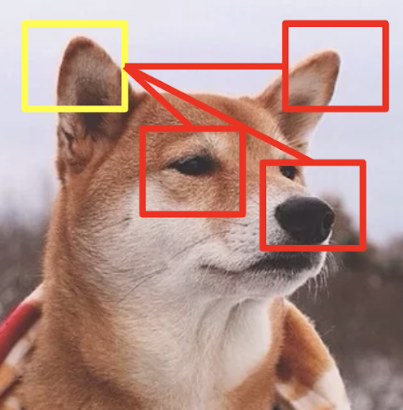
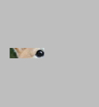
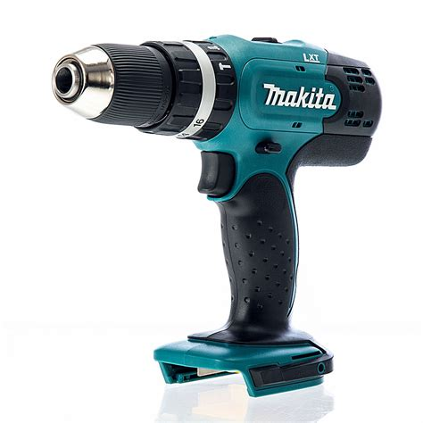
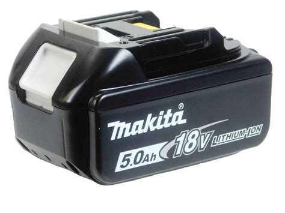

One version of the model can, given the start of an image or generically the
start of a sequence, complete the sequence by looking up correlated/associated
concepts and spitting them out.
One version of the model can, given the start of an image or generically the
start of a sequence, complete the sequence by looking up correlated/associated
concepts and spitting them out.

The transformer is based on attention, an idea often illustrated with images like the following from Lilian Weng's excellent overview4 shown to the left. (Weng's blog is a gem filled with superb technical overviews of many machine-learning topics.)The idea of the picture is that the model somehow learns to associate pointy ears with Shiba Inu eyes and noses. When you see the word attention think "correlate" or, even better, "associate." The associations are, of course, built up by looking at lots of examples ...
One version of the model can, given the start of an image or generically the
start of a sequence, complete the sequence by looking up correlated/associated
concepts and spitting them out.
The model can "remember" that a single shiba inu eye usually appears with a nose, mouth, and pointy ears and recover that general idea:

The transformer was originally designed for language translation. That is, given a full or partial sequence in one language, translate and complete the sequence in another language. For example, in addition to training on lots of shiba inu faces above, the model can separately include lots of human faces. Then the language sequence translation problem might look like this:
Or, perhaps even like this:
Based purely on a loose idea of memory by association, it's easy to see how abstract concepts like 'face' generalize.
In a commerce setting, a shopping cart that includes a battery-powered drill might suggest a completion (by association with previous shopping cart purchases) including bits and a spare battery:


You may recall that recurrent neural networks (RNNs), and later and more generally long-short-term memory models and seq2seq models were designed to map input sequences to output sequences. And in some cases (especially image processing), convolutional networks were adapted to problems like this.
These models can in some cases work very well. They all also suffer from various shortcomings. In particular, the RNN-like models can do a bad job of "remembering" associations in the past. Many of the models are sequential by nature, limiting to some extent their ability to utilize fast hardware-based matrix multiply schemes. Finally some of the models exhibit numerical stability issues on long sequences.
Attention ideas were added to RNNs to improve their longer-term "memory." This worked well. But the sequential and stability concerns generally remained. Layer on layer of tweaks and work-arounds have been applied to these models to improve their performance, often quite successfully. But the implementations became increasingly complicated.
Going much further back, attention-like models have historically been very important in commerce and engineering. Perhaps the best example of this is association rules mining, an idea formalized by Rakesh Agrawal and colleagues from IBM in 19936 followed by their famous 'apriori' algorithm a year later. Agrawal's problem in 1993 was, given a customer shopping cart full of items, what else should I recommend to them to buy? That is, basically, the same problem everyone is still interested in today. It could be (and is) solved today with variations of the transformer.
Even further back, the attention mechanism used in the transformer is conceptually related to the idea of latent semantic indexing (LSI)8, an idea from 1988 that was the culmination of related concepts in factor analysis dating back to the late 1960s. LSI uses a linear embedding method to "remember" approximate associations. Transformer enhances a related, but basically similar, association idea with weights learned from a nonlinear neural network.
A large percentage of compute cycles in the 90's on IBM, Teradata, and other systems common in commerce was dedicated to solving association-rules mining problems and LSI problems. From that perspective, not much has changed.
The attention parts of the model are implemented as simple matrix multiplies. The model weights come from simple feed-forward neural networks, also matrix multiplies (plus a nonlinear activation function). The basic idea of the model is not complicated. Chatbot like sequence-completion variations of the model (BERT, etc.), basically consist of 5 steps:
(Note the "conceptually" simple caveat. Implementations always have their tricky details. Among the tricky aspects of transformer are the positional encodings. But the overall model itself remains remarkably simple.)
I strongly recommend watching Łukasz Kaiser's (among the original authors) talk7 for more.
One important (in my opinion) optimization of the transformer not mentioned by Weng is the Linformer9 by Wang and other researchers at Facebook AI. They make the observation that the attention "memory" matrices are usually of low rank (provably so under certain hypotheses). Their result reminded me of the "Why are Big Data Matrices Approximately Low Rank?" results of Udell and Townsend10 (and are indeed based on more or less the same underlying ideas).
The upshot is that some of the matrix multiplications so efficiently used by the transformer can be computed even more efficiently without affecting the result. And, those savings may grow proportionally as the transformer is applied to ever-larger problems.
Especially because of the Linformer result, my personal view is that there is a lot of room left in the transformer family of models. It's only going to increase in importance over the next 5 years or more.